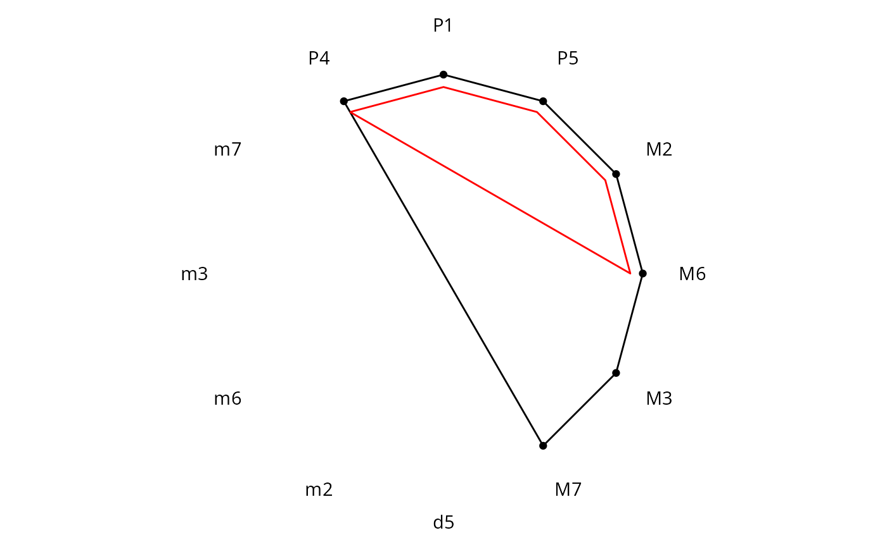
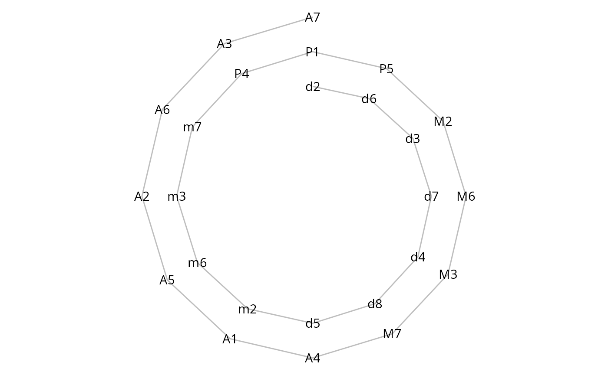
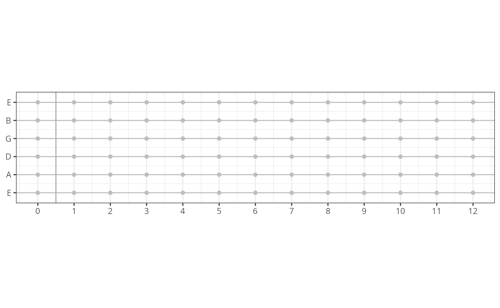

Work In Progress
WIP.Rmd#>
#> Attaching package: 'music'
#> The following object is masked from 'package:utils':
#>
#> example
#> ── Attaching packages ─────────────────────────────────────── tidyverse 1.3.2 ──
#> ✔ ggplot2 3.4.0 ✔ purrr 0.3.5
#> ✔ tibble 3.1.8 ✔ dplyr 1.0.10
#> ✔ tidyr 1.2.1 ✔ stringr 1.4.1
#> ✔ readr 2.1.3 ✔ forcats 0.5.2
#> ── Conflicts ────────────────────────────────────────── tidyverse_conflicts() ──
#> ✖ dplyr::filter() masks stats::filter()
#> ✖ dplyr::lag() masks stats::lag()Data
Chromatic
cb <- create_chromatic("b")
glimpse(cb)
#> Rows: 12
#> Columns: 2
#> $ idx_r <dbl> -1, 0, 1, 2, 3, 4, 5, 6, 7, 8, 9, 10
#> $ note <chr> "Ab", "A", "Bb", "B", "C", "Db", "D", "Eb", "E", "F", "Gb", "G"Aelian A
aa <- create_aeolian_A()
glimpse(aa)
#> Rows: 7
#> Columns: 2
#> $ idx_r <dbl> 0, 2, 3, 5, 7, 8, 10
#> $ note <chr> "A", "B", "C", "D", "E", "F", "G"Plot
demo <- start_with_some_values(-6:5) |>
add_roles() |>
set_period(12) |>
periodic_slice(0:11)
demo <- demo |>
mutate(polar = pi/2 - as.integer(idx)/12 * 2 * pi,
x = cos(polar),
y = sin(polar))
ggplot(data = demo, aes(x = x, y = y)) +
geom_text(data = demo, aes(label = role)) +
geom_point(data = periodic_slice(demo, -1:5), aes(x= .8*x,y=.8*y))+
geom_path(data = periodic_slice(demo, c(-1:5,11)), aes(x= .8*x,y=.8*y))+
geom_path(data = periodic_slice(demo, c(-1:3,11)), aes(x= .75*x,y=.75*y),col="red")+
coord_equal() +
theme_void()
demo <- get_roles() |>
mutate(z = as.integer(idx),
polar = pi/2 - (z %% 12)/12 * 2 * pi,
x = cos(polar),
y = sin(polar))
adj <- max(max(abs(demo$z)), 50)
ggplot(data = demo, aes(x = x * (adj+z)/adj, y = y * (adj+z)/adj)) +
geom_path(col = "grey") +
geom_text(data = demo, aes(label = role)) +
coord_equal() +
theme_void()
data <- expand_grid(y = 1:6, x = 0:12)
adj <- 0.3
ggplot(data, aes(x = x, y = y)) +
geom_hline(yintercept = 1:6, col = "grey") +
geom_vline(xintercept = 0.5, col = "darkgrey") +
geom_point(col = "grey") +
theme_bw() +
scale_x_continuous(breaks = 0:12, name = NULL) +
scale_y_continuous(breaks = 1:6, labels = c("E", "A", "D", "G", "B", "E"), name = NULL) +
coord_fixed(ratio = 1/2, ylim = c(1 - adj, 6 + adj))
triad <- function(type){
out <- switch(type,
maj = c("M3", "P5"),
min = c("m3", "P5"),
aug = c("M3", "A5"),
dim = c("m3", "d5"),
sus2 = c("M2", "P5"),
sus4 = c("P4", "P5"),
NA)
c("P1", out)
}
seven_chord <- function(type){
out <- switch(type,
maj = c(triad(maj), "M7"),
dom = c(triad(maj), "m7"),
dom_d5 = c("P1", "M3", "d5", "m7"),
min_maj = c(triad("min"), "M7"),
min = c(triad("min"), "m7"),
aug_maj = c(triad("aug"), "M7"),
aug = c(triad("aug"), "m7"),
dim_maj = c(triad("dim"), "M7"),
half_dim = c(triad("dim"), "m7"),
dim = c(triad("dim"), "d7"))
out
}